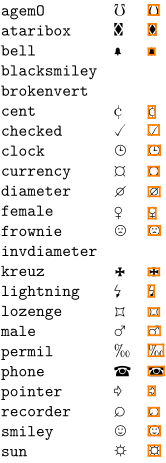
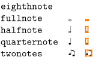
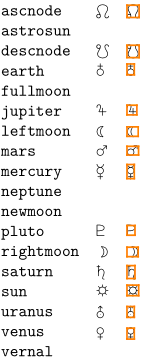
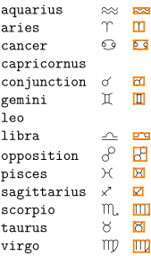
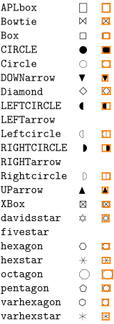

Contents
You can load Roland Waldi's Symbols with
\usesymbols[jmn]
There are several symbol sets defined. If you want the black symbol for lastpage
(
), you can either load the whole navigation 1 sybol set first:
\setupsymbolset [navigation 1] \symbol [lastpage]
or use it as
\symbol[navigation 1][lastpage]
The font itself is included in ConTeXt.
Symbol sets
wasy general
-
%\setuplayout[scale=0.7] \usesymbols[was] \showsymbolset[wasy general]
- 
wasy music
-
%\setuplayout[scale=0.7] \usesymbols[was] \showsymbolset[wasy music]
- 
wasy astronomy
-
%\setuplayout[scale=0.7] \usesymbols[was] \showsymbolset[wasy astronomy]
- 
wasy astrology
-
%\setuplayout[scale=0.7] \usesymbols[was] \showsymbolset[wasy astrology]
- 
wasy geometry
-
%\setuplayout[scale=0.7] \usesymbols[was] \showsymbolset[wasy geometry]
- 
wasy physics
-
%\setuplayout[scale=0.7] \usesymbols[was] \showsymbolset[wasy physics]
-

wasy apl
-
%\setuplayout[scale=0.7] \usesymbols[was] \showsymbolset[wasy apl]
-

All glyphs
-
%\setuplayout[scale=0.7] \showfont[waldisymbol]
-

-
%\setuplayout[scale=0.7] \showfont[waldisymbolbold]
-

See also
- source: symb-was.mkii
context source=yes> %\setuplayout[scale=0.7] \usesymbols[was] \showsymbolset[wasy general]